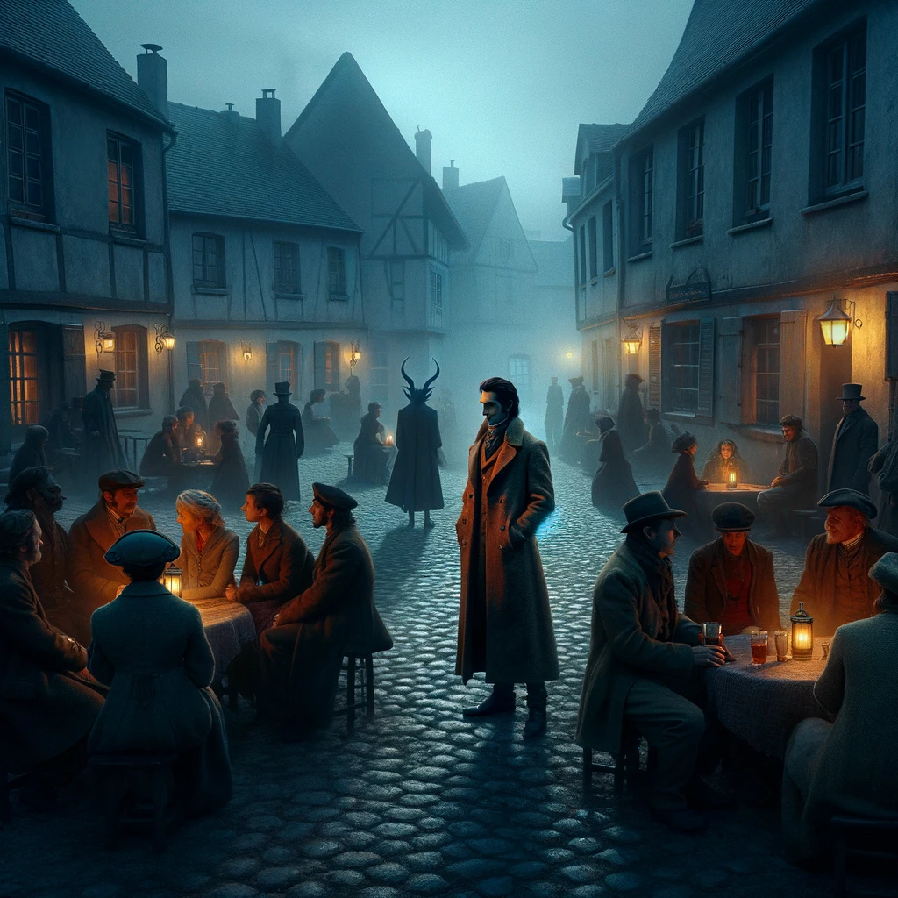
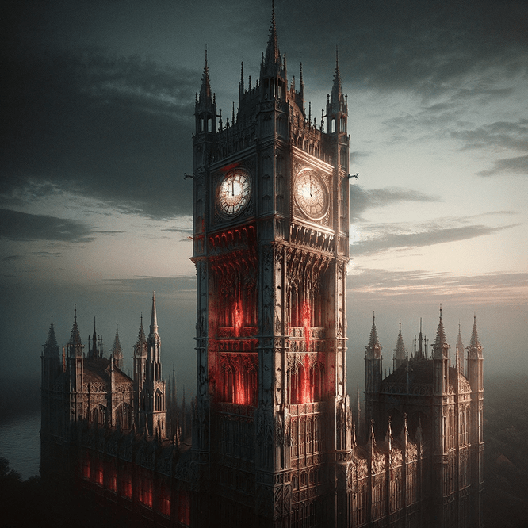
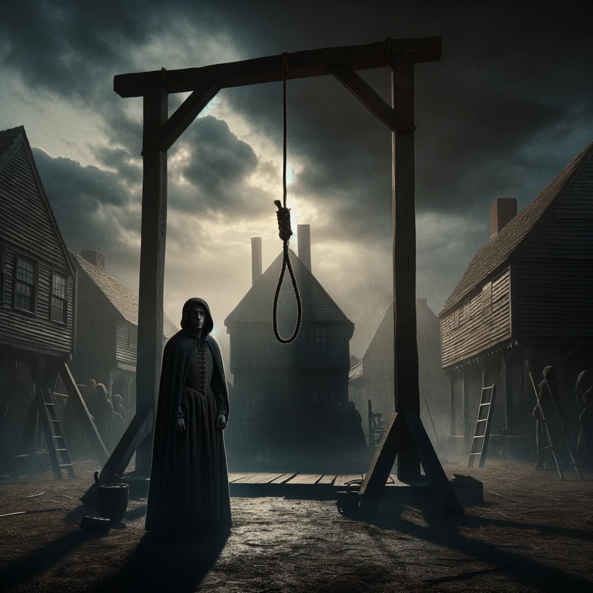
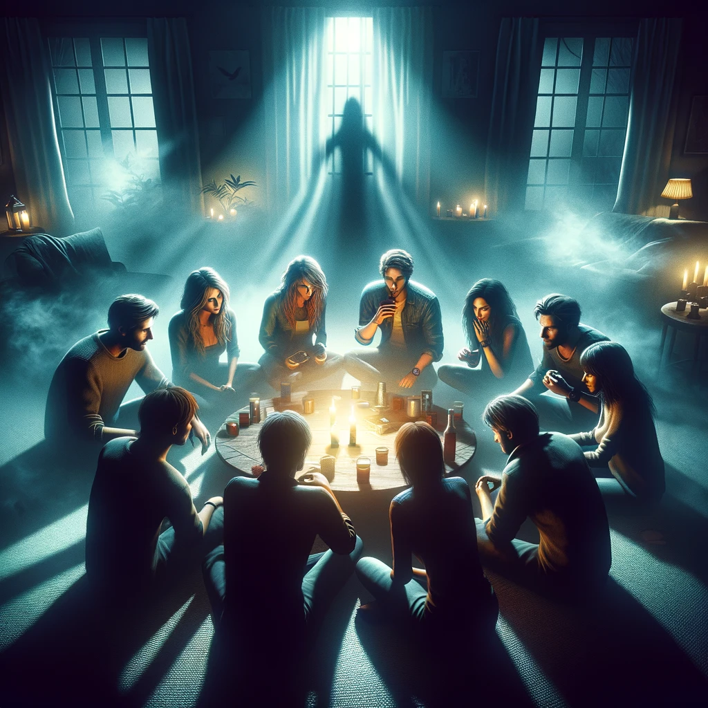
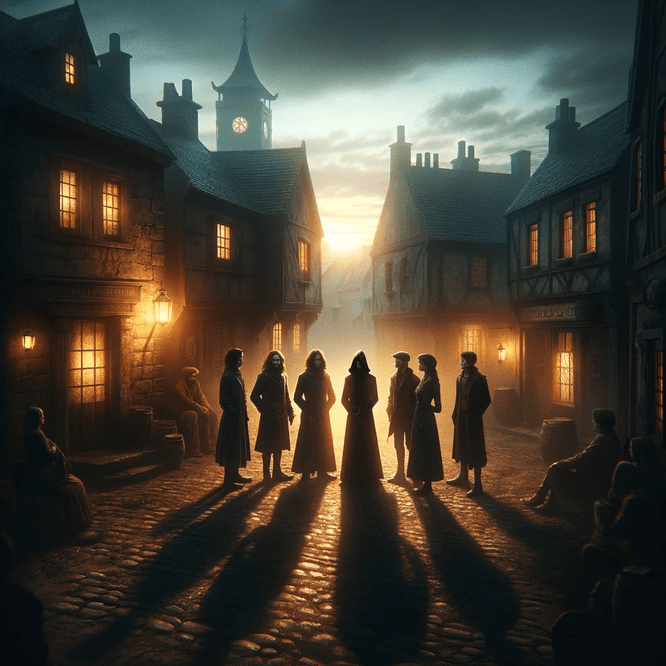
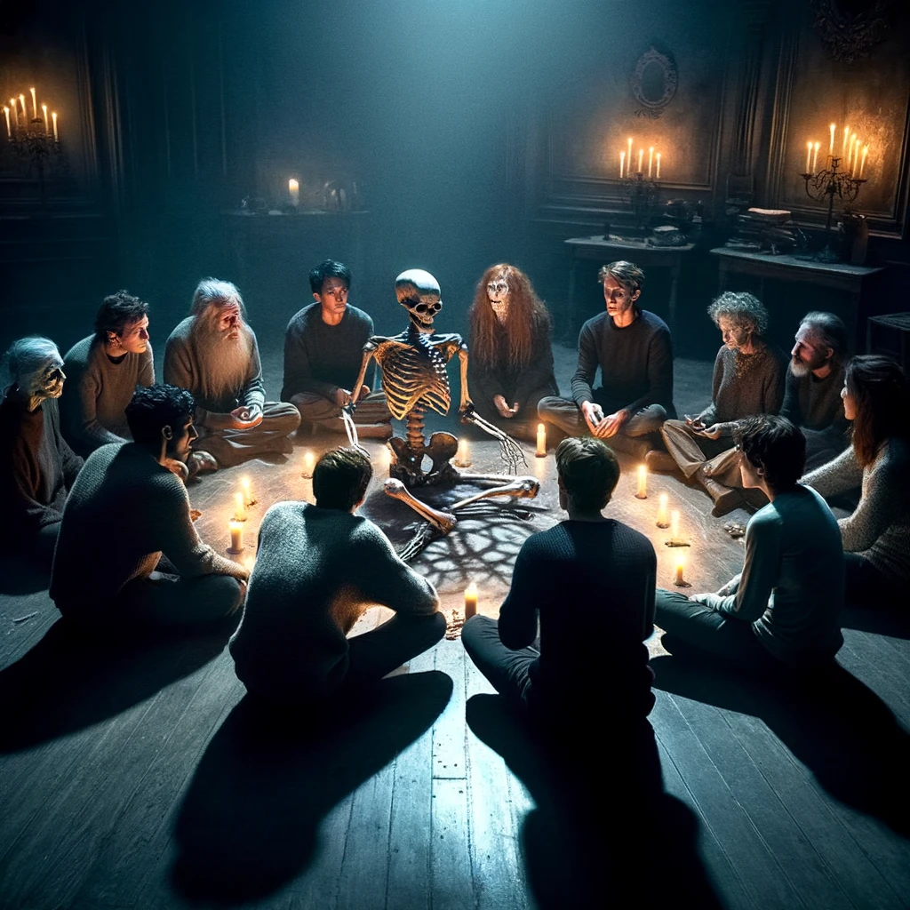

The townsfolk in the town, with the evil members hidden among them
The prompt used for this image was: "A demon hiding among town members, make it slightly ominous"
This game was created by a group called "The Pandemonium Institute which was founded in 2019. According to their About Us section on their website, they started as a company in Sydney, Australia. Their main goals with this game is to make the game an enjoyable experience for both new and old players, which I personally believe they have executed perfectly through the modifiers that prevent new players from dying early on or not being able to have a chance to talk. With frequent updates and even weekly official games hosted on their Twitch and Youtube, I really believe this game has the potential to be a very great game.
The history of Blood on the Clocktower goes back to March 2019, where they raised $570,000 USD during a kickstarter which was over eight times their funding goal. Since then they have held several conventions in places such as Washington DC, Vegas, and Sydney. They even have plans for the game being translated in multiple languages, currently they only have English and Simplified Chinese, but 2024 will have German and Spanish versions on the horizon.
What

A "Bloody" Clocktower, where the game takes place
The prompt used for the image was: "Bloody clocktower that has similar architecture as a london tower but not too bloody"
My Hobby is playing Social Deduction Games(SDG), if you aren't familiar with Social Deduction Games it is typically a game where a group of "Good" players are trying to find and remove the "Evil" players who are hiding amongst them. There are a lot of SDGs that you may be familiar with such as the party game "Mafia" or the well known game "Among Us", for some examples. The joy in playing Social Deduction Games comes from using logical reasoning to deduce who the evils among you are, which can even include interpreting how your friend's actions and behaviors as a player. Is someone acting unusually suspicious? call them out! One of my favorite Social Deduction Games (which I dedicated my page to) is called Blood on the Clocktower, which you can read up on below.
Welcome to Blood on the Clocktower! Also referred to as BOTC, Blood on the Clocktower is a Social deduction based game (Similar to the Party game "Mafia") where a Good team tries to identify who the Evil members among them are before the Evil Team kills off the Town one by one. This game is usually played in person, although it can be played online with some adjustments. The greatest aspects of this game is having controlled randomness by having the narrator make important decisions, as well as dead players still getting to participate in conversations which is unusual for games of this genre. Lastly there are modifiers that can be enacted which change how the game works, usually in favor of making the game more fun. For example one of these modifiers are used to protect newer players from dying off right away, while some speed up the game.
When

Players who are executed during the day die to a noose
The prompt used for the image was: "A person standing in front of a noose during the salem witch trials, make it slightly ominous"
This game doesn't have a confirmed time when it takes place, but based on the aesthetics and story surrounding the game, my assumption is that it takes place sometime around the Salem Witch Trials era, which would be around 1690 to 1700 when people would be executed publicly for any suspicious activity, which is a gameplay feature in Blood on the Clocktower. The aethetics also include artwork of houses that appear as if they were from that time. This time period was also before the scientific era where people developed the scientific method, which makes sense given most of the abilities in this game don't make logical sense and are rather based on intution.
However as mentioned in the "Who" section, this game started development in around March of 2019, and ever since then has only proceeded to grow more and more as a company, leading to the eventual public release of the game as well as the ability to hose several public conventions. As present day, The Pandemonium Institute (Creators of the Game) continue to release new content monthly, and although it may not be much, paired with the infinite combinations of how this game could be set up, even the smallest addition can cause a lot of change in the game.
Where

Players sitting in a circle when playing Blood on the Clocktower
The prompt used for the image was: "Playing a party game with friends during a party, with everyone sitting in a circle, make it slightly ominous"
This game can either be played in person with friends and family, with everyone sitting in a circle, or it can be played online, where an online system is used to have everyone "sit" in a circle. When playing, players may step to the side with another player to talk in private, but may not change where they sit in the circle. This can be played almost anywhere as long as there is enough space for players to sit in a circle (which isn't required, but is helpful). As for the story aspect to the game, this game takes place in a town called "Ravenswood Bluff" which is described as follows according to the wikipedia for this game:
"Clouds roll in over Ravenswood Bluff, engulfing this sleepy town and its superstitious inhabitants in foreboding shadow. Freshly-washed clothes dance eerily on lines strung between cottages. Chimneys cough plumes of smoke into the air. Exotic scents waft through cracks in windows and under doors, as hidden cauldrons lay bubbling. An unusually warm Autumn breeze wraps around vine-covered walls and whispers ominously to those brave enough to walk the cobbled streets.
Anxious mothers call their children home from play, as thunder begins to clap on the horizon. If you listen more closely, however, noises stranger still can be heard echoing from the neighbouring forest. Under the watchful eye of a looming monastery, silhouetted figures skip from doorway to doorway. Those who can read the signs know there is... Trouble Brewing" - Credit Here
How

The townsfolk in the town, with the evil members hidden among them
The prompt used for this image was: "A town with 7 members, make it slightly ominous"
Well how do you play? In Blood on the Clocktower, there are two teams, the Good Team and the Bad Team, the goal of the Good Team is to find and execute the Demon hiding among them before it is too late, while the goal is the Evil team is to ensure that one of their members, the Demon, to the end of the game without getting caught by the good team. The good team has two types of players, Townsfolk and Outsiders, Townsfolk are your generic goodies that have some sort of ability that can help the town deduce who the Evil team is, while outsiders act as a hinderance to the Good Team, this is useful when the Evil Team would otherwise get overwhelmed by the Good Team. On the Evil Team is the Demon and their Minions, The Demon's goal is to make it to the end of the game as one of the last two surviving players, while their minions are also trying to help the Demon achieve that goal. The interesting part of the Evil Team is that the Minions can be sacrificed without losing the game, but the moment the Demon dies it is curtains for the Evil team. Everything explained here is also summarized in the table below for easier interpretation of the information.
Role
Description
How to Win
Townsfolk (Good)
You are a standard Good player, and have an ability that will help Good win
Find and Execute the Demon hiding in the town
Outsider (Good)
You are a Good player that has an ability which hinders the Good Team's ability to win
Find and Execute the Demon hiding in the town
Minion (Evil)
You are Minion working for the Demon, who wants to take over the town
Help the Demon make it to the end of the game
Demon
You are the Demon, your goal is to take over the town and survive
Survive until the end of the game
Why

Both dead and living players in the game playing at the same time
The prompt used for the image was: "People sitting in a circle playing a game with a living skeleton, make it slightly ominous"
So why should you play Blood on the Clocktower? What makes it stand out from the other Social Deduction Games in the Genre? The first thing that sets this game apart is the Storyteller, they act as the Narrator of the game who controls the game to make sure everything goes smoothly, additionally players can interact with the Storyteller as a part of the game. The Storyteller makes a lot of decisions that can impact the outcome of the game, such as what information to give to players, when to lie to players, as well as controlling "random" actions in some cases. While the Storyteller does have a lot of power in deciding which team comes out on top, they are heavily advised to make the game fair for both sides, and to make the game fun for all players, otherwise that defeats the purpose of playing games in the first place.
Speaking of fun, thats the other reason that makes this game stand out from the rest. This game's core value is to make sure that ALL players have fun, regardless of whether this is your first or millionth game of Blood on the Clocktower, and regardless of how skilled you are at playing these types of games. There are several modifiers that can be added to a game of Blood on the Clocktower that can ensure all players have fun, such as a modifier that protects good player, a modifier that can speed up a game if it is going too slow, or a modifier that can help the Evil team if they would be in a tight spot otherwise. Of course the Storyteller also is required to make sure all players have fun as apart of that ability to make sure all players have fun.